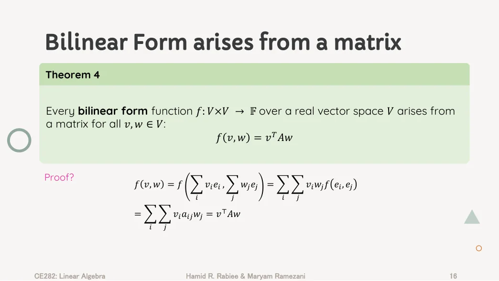
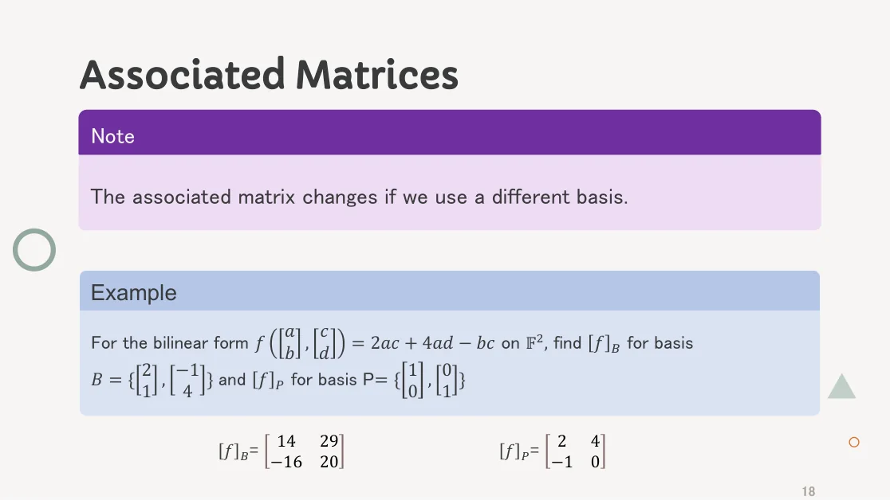

بخش ۲: Bilinear Form — فرم دوخطی
چرا این بخش را میخواهیم؟ فرم خطی رابطهٔ یک بردار با یک بردار ثابت را میسنجد. حالا میخواهیم هر دو ورودی متغیر باشند؛ یعنی بتوانیم رابطهٔ دو بردار را اندازه بگیریم. ضرب داخلی که در ادامه میآید، یک نوع ویژه از همین ساختار است.
تعریف کامل در فضای حقیقی: اگر \(B:V\times W\to\mathbb R\)، باید برای تمام بردارها و اسکالرها داشته باشیم:
\[ \begin{aligned} B(\alpha x+\beta z,y)&=\alpha B(x,y)+\beta B(z,y),\\ B(x,\alpha y+\beta w)&=\alpha B(x,y)+\beta B(x,w). \end{aligned} \]
توجه: «دوخطی» بودن به معنای خطی بودن \(B((x,y))\) نسبت به زوجِ مشترک \((x,y)\) نیست. برای مثال \(B(x,y)=xy\) روی \(\mathbb R\) دوخطی است، ولی \(B(2x,2y)=4xy\)، نه \(2xy\).
اسلایدهای ۱۲ تا ۱۸
۱. مفهوم فرم دوخطی
در فرم خطی، یک بردار وارد تابع میشد. اینجا دو بردار داریم:
\[ B:V\times W\longrightarrow\mathbb F \]
شرط این است که اگر یکی از ورودیها ثابت باشد، تابع نسبت به ورودی دیگر خطی باشد.
برای نمونه:
\[ B(x,y)=x_1y_1+2x_2y_2 \]
اگر \(y\) ثابت باشد، تابع نسبت به \(x\) خطی است. اگر \(x\) ثابت باشد، تابع نسبت به \(y\) هم خطی است.
اما توجه کن که فرم دوخطی الزاماً نسبت به زوج \((x,y)\) بهصورت یکجا خطی نیست.
۲. نمایش ماتریسی فرم دوخطی
هر فرم دوخطی روی یک فضای حقیقی متناهیبعدی را میتوان به شکل زیر نمایش داد:
\[ \boxed{B(x,y)=x^TAy} \]
مؤلفههای \(A\) با اعمال تابع روی بردارهای پایه مشخص میشوند:
\[ A_{ij}=B(e_i,e_j) \]
اثبات نمایش ماتریسی؛ ضرایب ماتریس از کجا میآیند؟

در پایهٔ استاندارد \(x=\sum_i x_ie_i\) و \(y=\sum_j y_je_j\) را بنویس. با دو بار خطی بودن:
\[ B(x,y)=\sum_i\sum_j x_i y_j B(e_i,e_j). \]
اگر \(a_{ij}=B(e_i,e_j)\) بگذاریم، جمع بالا دقیقاً برابر \(x^TAy\) است. بنابراین ماتریسِ یک فرم دوخطی را مقادیر فرم روی جفت بردارهای پایه تعیین میکنند. در پایهٔ غیراستاندارد هم همین ایده برقرار است، اما \(x,y\) باید با بردار مختصاتشان در آن پایه وارد فرمول شوند.
مثال خود اسلاید ۱۸

فرم زیر را داریم:
\[ B(x,y)=2x_1y_1+4x_1y_2-x_2y_1 \]
ماتریس آن در پایهٔ استاندارد:
\[ A= \begin{bmatrix} 2&4\\\ -1&0 \end{bmatrix} \]
پایهٔ جدید:
\[ b_1=(2,1),\qquad b_2=(-1,4) \]
ماتریس تغییر پایه:
\[ P= \begin{bmatrix} 2&-1\\\ 1&4 \end{bmatrix} \]
ماتریس فرم در پایهٔ جدید طبق رابطهٔ زیر به دست میآید:
\[ A_B=P^TAP \]
ابتدا:
\[ AP= \begin{bmatrix} 8&14\\\ -2&1 \end{bmatrix} \]
سپس:
\[ A_B= \begin{bmatrix} 2&1\\\ -1&4 \end{bmatrix} \begin{bmatrix} 8&14\\\ -2&1 \end{bmatrix} \]
پس:
\[ \boxed{ A_B= \begin{bmatrix} 14&29\\\ -16&-10 \end{bmatrix} } \]
توجه: در خود اسلاید، درایهٔ پایینراست ۲۰ درج شده است؛ اما محاسبهٔ مستقیم \(B(b_2,b_2)\) مقدار \(-10\) میدهد. بنابراین آن درایه در اسلاید ظاهراً خطای محاسباتی دارد.
چرا فرمول تغییر پایه \(P^TAP\) است، نه \(P^{-1}AP\)؟
ستونهای \(P\) بردارهای پایهٔ جدیدند. اگر \([x]_{\mathcal B}\) مختصات \(x\) در آن پایه باشد:
\[x=P[x]_{\mathcal B},\qquad y=P[y]_{\mathcal B}.\]
پس:
\[ \begin{aligned} B(x,y)&=x^TAy\\ &=[x]_{\mathcal B}^{T}\underbrace{(P^TAP)}_{A_{\mathcal B}}[y]_{\mathcal B}. \end{aligned} \]
پس \(A_{\mathcal B}=P^TAP\). این را تبدیل همنهشتی مینامند. فرمول \(P^{-1}AP\) برای ماتریس نمایش یک عملگر خطی در تغییر پایه است؛ چون فرم دوخطی دو جایگاه ورودی دارد، دو عامل \(P\) و \(P^T\) میبینیم.
کنترل جواب اسلاید ۱۸: با \(b_2=(-1,4)\) و \(A=\begin{bmatrix}2&4\\-1&0\end{bmatrix}\):
\[B(b_2,b_2)=b_2^TAb_2=(-1,4)\begin{bmatrix}14\\1\end{bmatrix}=-10.\]
بنابراین درایهٔ پایینراست جوابِ چاپشدهٔ اسلاید که \(20\) است، با دادههای اسلاید سازگار نیست.
۳. فرم دوخطی متقارن
اگر:
\[ B(x,y)=B(y,x) \]
فرم دوخطی متقارن است.
در نمایش ماتریسی:
\[ \boxed{A=A^T} \]
مثال اضافهٔ ۱: تشخیص تقارن
\[ B(x,y)=3x_1y_1+2x_1y_2+2x_2y_1+5x_2y_2 \]
ماتریس:
\[ A= \begin{bmatrix} 3&2\\\ 2&5 \end{bmatrix} \]
چون:
\[ A=A^T \]
فرم متقارن است.
مثال اضافهٔ ۲: ساخت ماتریس از مقادیر فرم
فرض کن:
\[ B(e_1,e_1)=2,\quad B(e_1,e_2)=3 \]
\[ B(e_2,e_1)=-1,\quad B(e_2,e_2)=4 \]
پس:
\[ A= \begin{bmatrix} 2&3\\\ -1&4 \end{bmatrix} \]
حالا مقدار \(B((1,2),(2,1))\) را محاسبه کن:
\[ B(x,y)= \begin{bmatrix}1&2\end{bmatrix} \begin{bmatrix}2&3\\\\-1&4\end{bmatrix} \begin{bmatrix}2\\\1\end{bmatrix} \]
ابتدا:
\[ Ay=\begin{bmatrix}7\\\2\end{bmatrix} \]
پس:
\[ \boxed{B(x,y)=7+4=11} \]
۴. فضای دوگان
اسلایدهای ۱۳ و ۱۴ مفهوم فضای دوگان را هم معرفی میکنند:
\[ V^\*=\{f:V\to\mathbb F\mid f\text{ خطی باشد}\} \]
این مجموعه خودش یک فضای برداری است.
تابع:
\[ g(f,v)=f(v) \]
یک فرم دوخطی روی \(V^\*\times V\) است.
علت روشن است: جمع دو تابع خطی و ضرب آنها در اسکالر همچنان خطی است؛ از طرف دیگر \(f\) هم نسبت به \(v\) خطی است.
تمرین مفهومی: تقارن چرا معادل \(A=A^T\) است؟
برای فرم \(B(x,y)=x^TAy\)، جابهجایی ورودیها میدهد:
\[B(y,x)=y^TAx=x^TA^Ty.\]
پس اگر \(A=A^T\)، دو مقدار برابرند. برعکس، اگر برای همهٔ \(x,y\) برابر باشند، با انتخاب \(x=e_i,y=e_j\) میفهمیم \(a_{ij}=a_{ji}\). این اثبات دوطرفه است؛ صرفاً «به نظر متقارن بودن» کافی نیست.
مثال نقض: ماتریس \(\begin{bmatrix}2&4\\-1&0\end{bmatrix}\) فرم دوخطی تعریف میکند اما متقارن نیست، چون \(4\neq-1\). در فصل بعد میبینیم چرا برای ضرب داخلی حقیقی به تقارن هم نیاز داریم.